A clear next step
Understand what matters first, what can wait and how your budget can support a useful first phase.
Whole-property clarity · regenerative design · project guidance · Portugal + online
Food forests, abundant gardens and whole-property designs that bring together water, soil, trees, food, habitat and the way you want to live.
From a family garden to a whole quinta, retreat or community project, Benjy helps you see the possibilities, choose the first useful steps and bring them to life with the right support.
Bring Back Eden. Start with water. Build soil. Grow abundance.
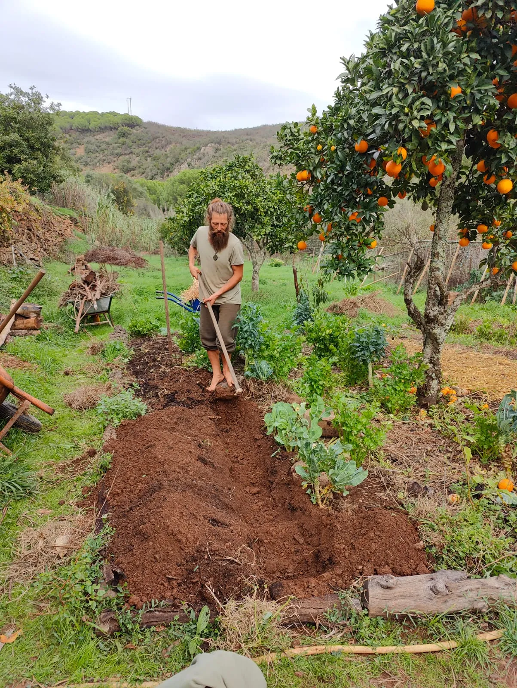
Real places · real process · future directions
Food forests, retreat gardens, living orchards and spaces to gather. A glimpse of the work, care and collaboration that help a place feed people, welcome wildlife and feel beautiful to be in.
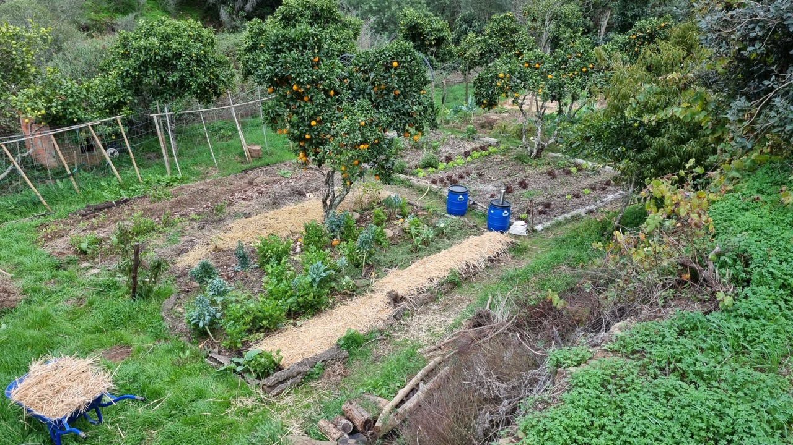

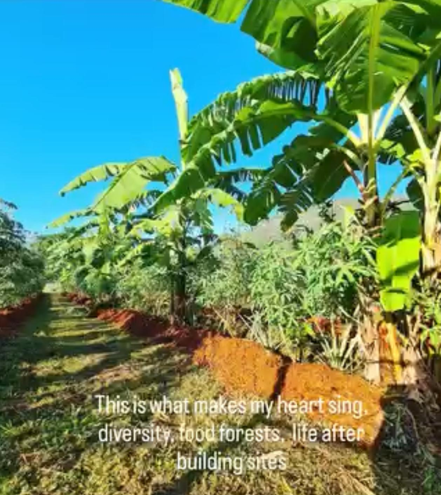
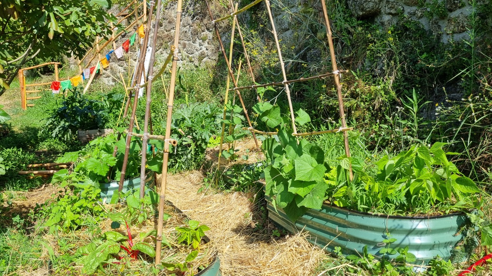
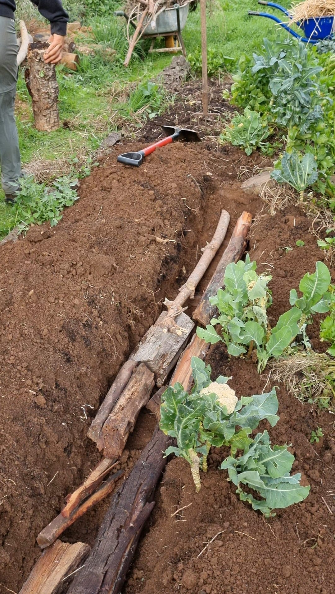
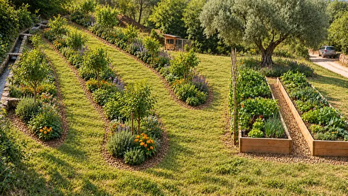
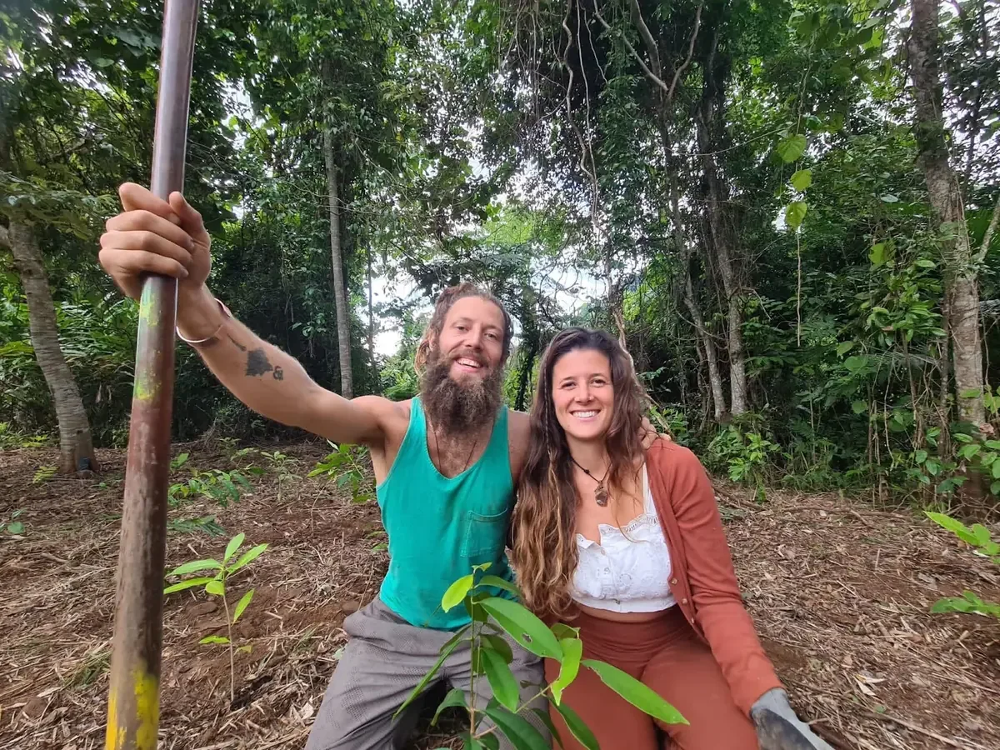
On a phone, swipe to explore the photographs.
Moinhos in the Algarve: retreat gardens managed and improved by Benjy. Casa Oasis: practical growing spaces and handmade landscape work. Cairns: a syntropic agroforestry research system implemented with mentors Thiago, Jay Jackson, Jeremy and volunteers. The tropical example shows an approach to learning; species and management for Portugal follow local conditions. The Tabua food-forest image is a design concept, not a completed installation.
Understand what matters first, what can wait and how your budget can support a useful first phase.
Maps, planting relationships and seasonal actions, with the detail agreed for your project.
Build it yourself with guidance, learn alongside us, or scope implementation and project management together.
Eden Sanctuary Gardens · clear pathways for bringing land back to life.
Choose the pathway that fits your land, project and capacity. These starting prices make the first step clear; every proposal is shaped around the place, its people and its real conditions.
For a garden, orchard, new property or project idea: preparation, a focused conversation and 3–5 useful next steps.
€111 launch priceStart with clarity → 02For one real area: a food-forest edge, orchard renewal, water-wise garden or growing space, from observation into a practical sequence.
From €450 · from €650 on siteDevelop one area well → 03Bring water, access, soil, orchards, food systems, biodiversity and future phases into one coherent regenerative direction.
From €1,500Design the whole system → 04Turn plans into living places through sequencing, sourcing, planting, project guidance, team learning, workshops and collaborative build days.
Custom scopeBring the plan to life →Not sure what fits? Just chat with Benjy on WhatsApp →
Eden Sanctuary Gardens
Benjy’s consulting, remote guidance, designs and on-site support can be mixed around your land and goals: food forests, productive gardens, orchard renewal, water-aware planting and whole-property direction.
Compact food forests and edible gardens.
€3,500–€6,000Often around 100–300 m²Perennial gardens, orchard renewal and syntropic rows.
€5,000–€15,000Often around 300–2,000 m²Agroforestry, retreats, homesteads and shared growing places.
From €12,000Individually designed and quotedThese are indicative establishment ranges. The first clarity, roadmap and design services below help define what belongs in your particular site; major infrastructure and extensive earthworks are scoped separately.
WhatsApp Benjy your project or vision
Slow, spread and sink rainfall into soil, roots and living landscapes.
Movement · infiltration · storage · overflow · vegetationBuild the conditions for fertility rather than depending endlessly on inputs.
Roots · cover · organic matter · fungi · nutrient cyclingGrow food, shade, habitat, biomass and resilience together.
Orchards · agroforestry · perennials · pollinatorsTurn an overwhelming property into understandable priorities and phases.
What now? What this autumn? What in year one? What can wait?Clear ways to work together
You can begin with one focused conversation, develop one important part of the land, design the whole property, or keep me beside the project through implementation. Each level has a clear outcome.
Preparation + consultation + synthesis / action plan
For landowners, buyers, gardens, farms, orchards, retreats and regenerative projects that need a calm outside eye, a whole-systems read and a clear order of actions.
Flagship€111Launch price, reviewed after the first clients
What you send before we meet
What you receive
What changes for you“I know what matters first, what I can start this week, and what I can stop spending money and energy on.”
To be clear: any drawing here is an explanatory concept sketch—not a measured design, a construction drawing or a masterplan.
One area · taken all the way to a plan you can build
For when you need more than direction, but not yet a whole-property design. We take one defined area or one real challenge and carry it through to a sequence you can act on.
From€450From €650 on site, plus travel. Final price after we look at size and complexity.
Typical focus
What you receive
What changes for you“I have a coherent roadmap for this part of the land, and I know how to move from ideas into the ground.”
Begins with a free 15–20 minute fit call, so we both know the scope is right before anything is booked.
Whole property · phased over years
For a whole quinta, farm, retreat or community project, where water, access, buildings, orchards, food production, habitat and future phases all have to work together rather than fight each other.
From€1,500Scoped after a site conversation
How we read the land
What you receive
What changes for you“I can see how the whole property fits together, what belongs where, and how to develop it in sensible phases over several years.”
This is a concept masterplan. It does not include licensed engineering, surveying, permitting or construction drawings. Where those are needed I will say so clearly and help you find the right professionals. Begins with a free 15–20 minute fit call.
After the plan
A plan is only half of it. Many people carry on with me while the land is actually changing.
Priced by scope. Every property moves at its own pace, so this is agreed together rather than packaged.
For teams, families + communities
Sometimes the most powerful design tool is helping the people who care for a place understand the system together. I can turn a project into a practical learning day so knowledge stays with the land.
The aim is not dependency. It is to leave the people caring for the place more capable, connected and confident.
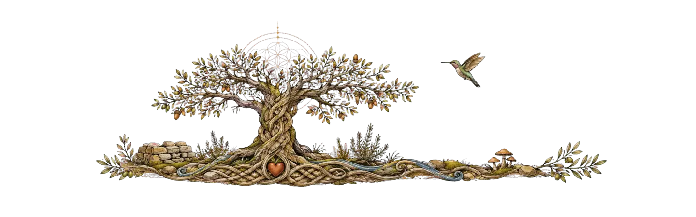
The principles behind the practice
There is wonder in watching a landscape come alive. Our part is practical: observe carefully, make thoughtful choices and keep learning from what happens.
Ask what would leave this place healthier: protected soil, more living roots, diverse habitat and a workable rhythm of care. Follow changes in cover, infiltration, plant survival and food production over time.
Design relationships between water, access, gardens, homes and people. Observe before acting; connect useful functions; choose steps that fit the place and the people caring for it.
Explore the design principles →Work with plant communities through space and time: different heights, life cycles and roles, with management that follows succession. Food crops and support plants are planned together, with pruning and biomass care as ongoing work.
Learn from Ernst Götsch’s work →In Mediterranean landscapes, water availability, summer heat, frost, fire exposure, soil and your capacity to maintain the system guide the design. A planting combination that thrives in tropical Cairns is not automatically suitable here.
The wider regenerative mission
The land work is practical, but it belongs to a bigger commitment: protect water, rebuild living soil, grow food and habitat, restore tired landscapes and help people become confident stewards of the places they care for.
I work with syntropy as a useful design lens: increase life, diversity, cycling, living roots and mutually supportive relationships while reducing waste, bare ground and unnecessary dependence. The goal is not to impose a fashionable template. It is to help the whole property become more resilient, productive and alive over time.
With Sofia, collaborators and the wider Awakening Eden community, I also want to co-create field days, workshops, talks, circles and demonstration projects where people can learn on real land. For us, interbeing is a guiding worldview: inner regeneration, ecological regeneration and healthy community belong in the same conversation, while each practical claim still needs evidence, observation and honest limits.
We want to share solutions and walk our talk. That means doing useful work now, documenting what we learn, connecting good people and helping regenerative projects move from beautiful ideas into living systems.
Recent design work · real places · concept studies
These are design and planning visuals, not finished “after” photographs. They help landowners see possible next steps before spending heavily or moving earth.
Central Portugal · concept exploration
A sloping orchard site explored through two realistic pathways that work with the existing trees rather than erasing what is already there.
Concept design only. Final earthworks depend on field-verified contour, slope, soil, rainfall, access and a safe overflow pathway.
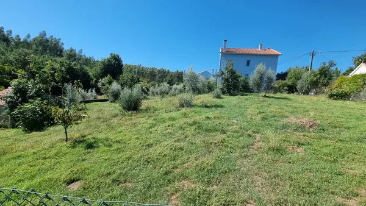
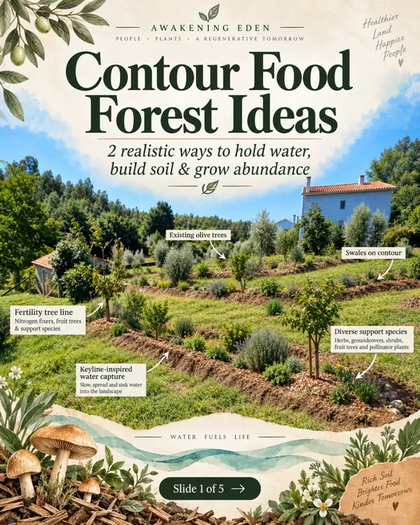
Luisa + Sim · Tabua, Oliveira do Hospital · concept study
A planning visual for curved food-forest rows beside the integrated water channel at the food-forest edge. It turns the early direction into a drawing that can be walked, tested and built in phases.
This is not a frozen masterplan or a completed “after” image. It is a living design direction: read the water, protect access and soil, establish useful planting layers, then let the system evolve through observation.
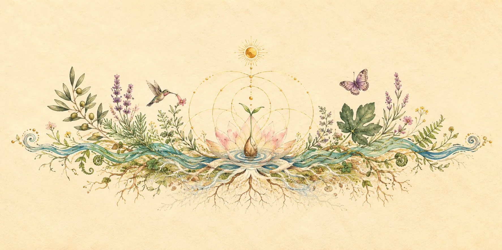
Moinhos, Algarve · retreat permaculture gardens
At Moinhos, Benjy managed and improved the retreat’s permaculture gardens. The work focused on soil health, cover, biomass, diverse growing areas and care for the existing citrus orchard.
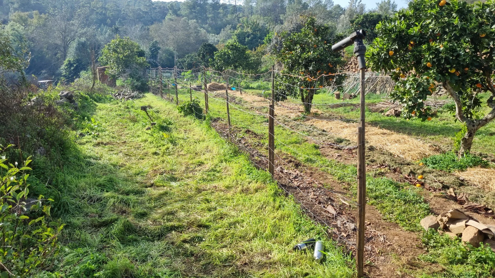
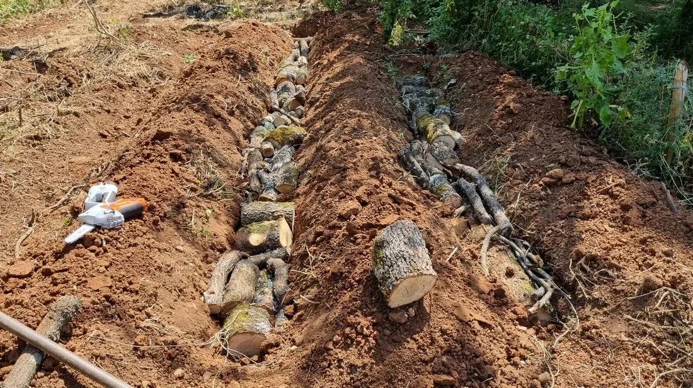
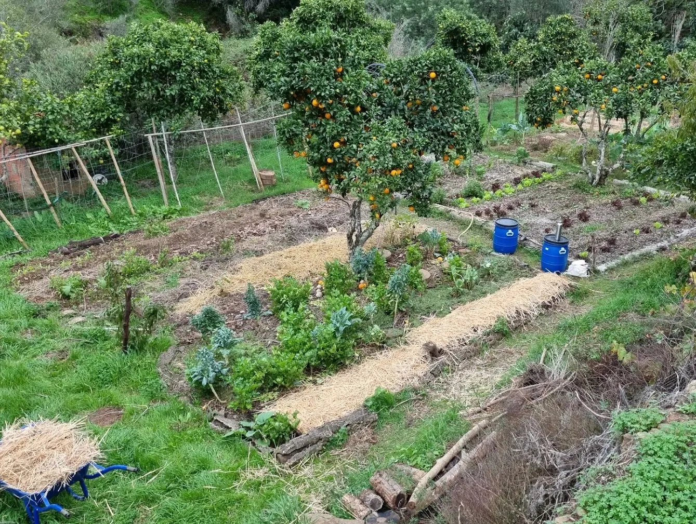
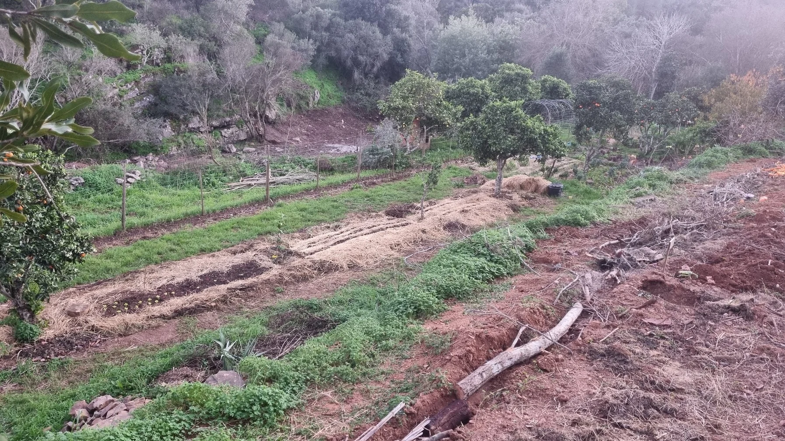
Documented moments from the Moinhos project, photographed in different parts of the property over time. They show a working process, not a guaranteed or measured outcome for another site.
Moinhos · a dated process sequence
One documented Moinhos sequence: begin with the existing land, return biomass, establish useful diversity and keep learning from what the system shows us.
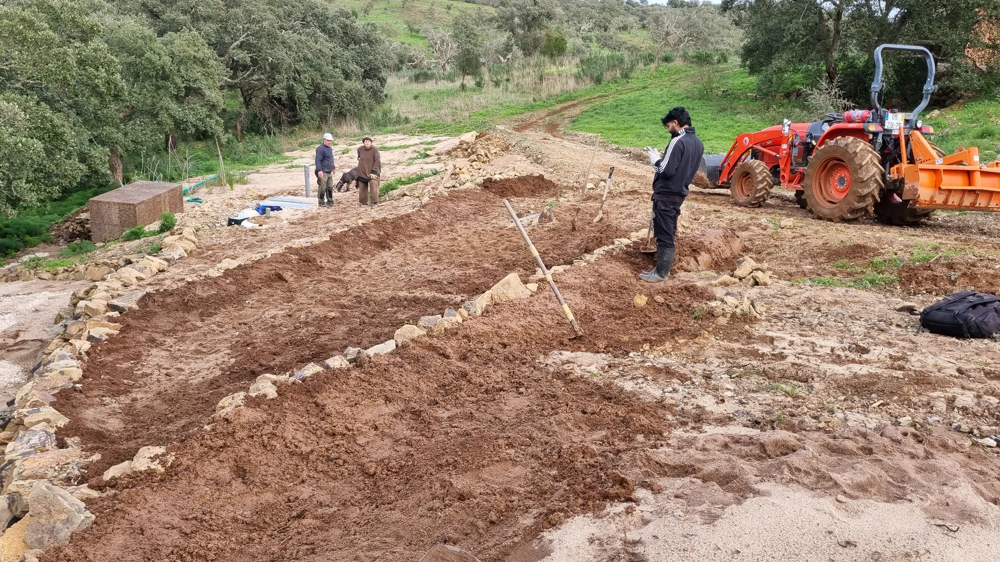
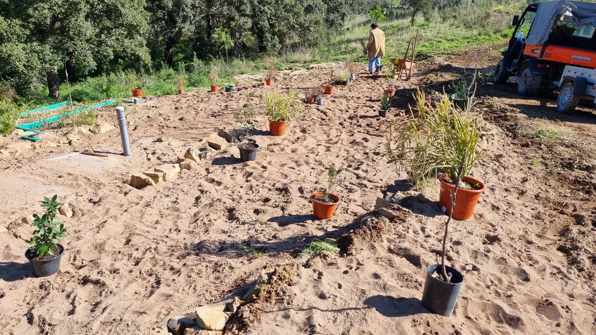
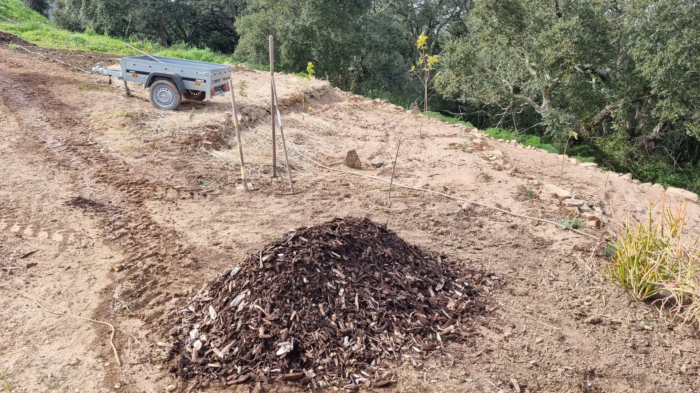
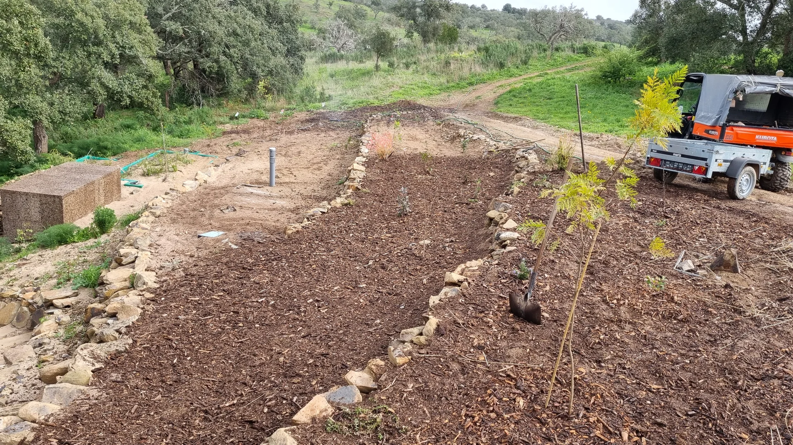
A little dreaming before designing 🌱
Before we talk solutions, I’d love to understand your land, your hopes, and what feels most alive or challenging right now.
There are no perfect answers. A few sentences, photos, a map pin, a walking video or a voice note are completely welcome.
Where is it? · Approximate size? · What is already there? · Water sources? · Orchard, forest, pasture or gardens? · What support are you looking for?
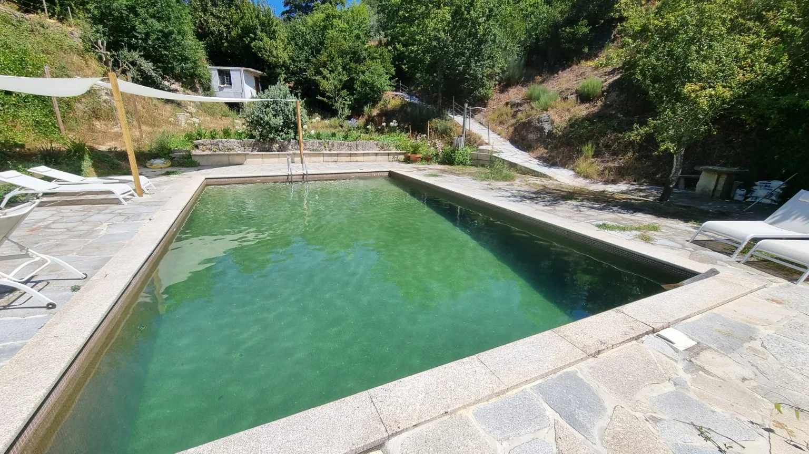
Projects · experiments · living systems
A small selection of edible gardens, growing systems and natural structures created by Benjy. The Casa Oasis bean-trellis garden is named where shown; the remaining images stay location-neutral until their project records are complete. Open any image for the full nine-project collection.
How it actually goes
Rural buyers + agents
A beautiful quinta can hold enormous possibility, but it can also come with deferred maintenance, tired soils, complicated water, neglected trees and a hundred competing ideas. Before spending heavily, it helps to understand what the land is already telling you.
For buyers
A regenerative property potential assessment for the land, water, trees, agricultural possibilities, resilience, constraints and important questions to ask.
Assess a property with me →For new land stewards
Protect what is valuable, address urgent water or erosion issues, establish cover and biomass, recover trees and choose what not to do yet.
Create my first land plan →For agents, architects, eco-builders + developers
You help people find, design or build the place. I can help your clients understand the water, contours, soil, orchards and regenerative potential, then move from overwhelm to 3–5 priorities, a whole-property concept or implementation support.
Explore partnerships + referrals →A useful partnership can begin very simply.
Awakening Eden can work as a referral partner or complementary package for rural-property clients, eco-home projects, retreats and developments: from a land diagnostic and clear action plan through water-wise and fire-smart design, orchard revival, food forests, syntropic systems and project guidance.
Regenerative assessment does not replace valuation, legal due diligence, structural inspection, licensed engineering, surveying or other qualified professional advice.
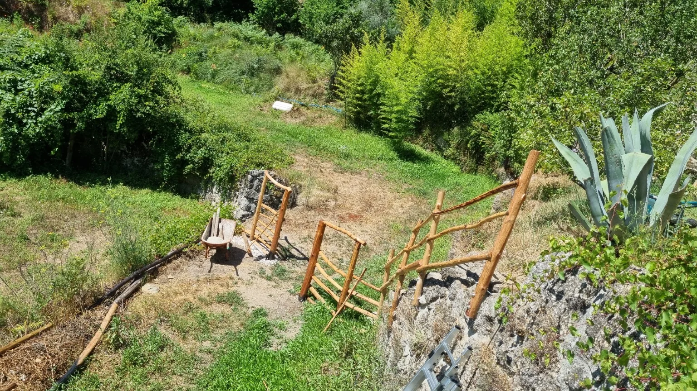
Productive ecological restoration
Restoration does not have to mean removing people from the landscape.
Beautiful systems can grow food, fertility, habitat, shade, livelihoods and ecological resilience together through agroforestry, perennial crops, orchard systems, mixed production, biomass, living soil, water cycling, succession and diversity.
No universal yield promise. The work begins with context, observation and what the land can realistically support.
Pilot + demonstration projects
Alongside individual properties, Awakening Eden wants to help develop practical demonstration projects for Mediterranean regeneration: places where soil, water, biodiversity, food, resilience, learning and community can be designed together, monitored over time and openly shared.
Agroforestry · productive ecological restoration · orchard regeneration · landscape rehydration · soil restoration · drought resilience · biodiversity · fire-aware regeneration · regenerative food systems · community-supported agriculture · training.
Begin with what a place already holds: land, water, trees, people, skills, local relationships, buildings, crops and practical equipment.
European, national and local programmes may offer co-funding for eligible projects, but availability, criteria and timing are call-specific. We explore appropriate funding pathways where suitable; no grant is assumed to cover everything.
Have a piece of the puzzle?
We are interested in working with restoration organisations, agroforestry networks, associations, farms, municipalities, researchers, educators, land stewards, eco-builders, developers and aligned funders.
Our wider Awakening Eden vision is to help co-create a regenerative sanctuary village where ecological homes, food forests, an animal sanctuary, education, wellbeing spaces, regenerative livelihoods and long-term stewardship can reinforce one another. We are open to joining an aligned project, co-creating with partners, or finding the right land together.
Regenerative action · people and places to explore
We do not need to build everything alone. These independent projects and learning spaces offer ways to discover work already happening, connect with practitioners and turn inspiration into action. Explore their current opportunities directly; being listed here does not imply a formal partnership with Awakening Eden.
Know a land steward, school, association, municipality or funder ready to act together? Start a conversation with us →
Ecological wisdom + modern tools
Human beings have been learning from landscapes for thousands of years. Today we can combine careful observation and place-based knowledge with modern ecology, soil science, agroforestry, hydrology, mapping, monitoring and whole-systems design.
Permaculture · syntropic agroforestry · regenerative agriculture · natural farming · ecological restoration · soil biology · biomimicry · systems thinking
The point is not to collect techniques. It is to understand relationships. Traditional and Indigenous ecological knowledge deserves respect for its source, culture and context.
Moinhos, Algarve · guest workshop
Hands-on days, conversations and shared observation help people understand a living system with more confidence and leave with examples they can adapt to their own place.


Events + community
Community days, project visits, shared meals, circles and future regenerative experiences can make space to slow down, participate and reconnect.
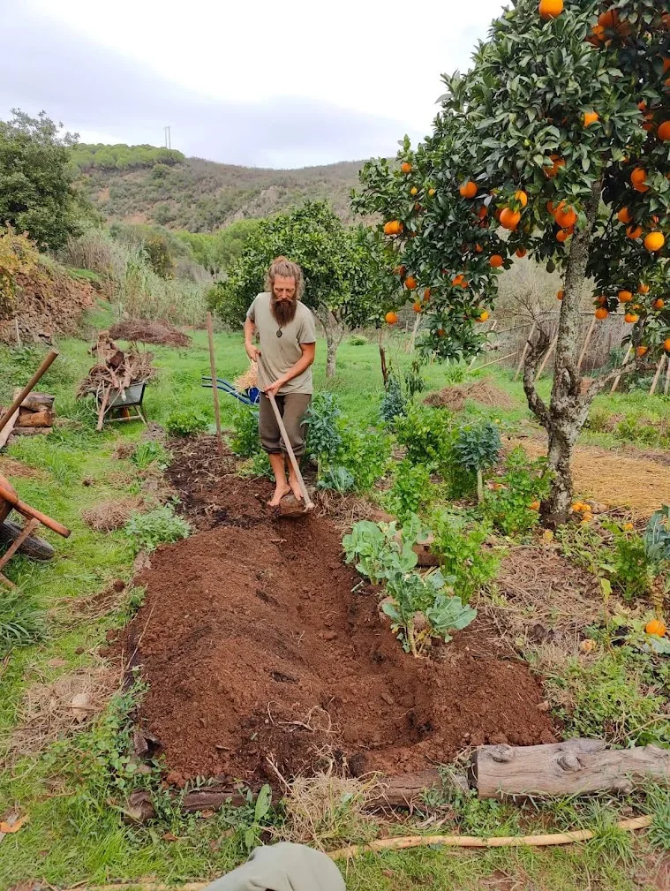
The human heart of the work
I love regeneration because it changes the question.
Instead of asking only, “How do we maintain this?” or “How much can we take from it?”, we can ask: How can this place become healthier, more abundant and more alive because we are here?
I love looking at a piece of land and asking: what could this become? Where is the water moving? What is the soil asking for? What trees are already trying to thrive? Where could we grow food, shade, biomass and habitat together?
I love helping someone look at an overwhelming piece of land and suddenly see a pathway. Not a perfect masterplan carved in stone. A living direction. A first step. A system we can keep observing, learning from and improving together.
Ten years of travelling and learning have left me with a deep trust in the goodness of people. Many of us are tired, stretched or living in survival mode. I want this work to offer a little breathing space, useful direction and the feeling that we can make something beautiful together.
That is also why Sofia and I share the Living Library: films, books and real projects that helped us find hope, open our hearts and put our hands to work. There is so much worth caring for. So much we can still create.
My aim is simple: serve people and planet by leaving the land, the people and the project more capable and alive than when we began. We work with syntropy, reciprocity and the understanding that every good intervention should strengthen the wider living system.
Living Library
A garden of ideas, films, teachers and practical resources that have shaped our own journey.
Follow your curiosity, find something useful for where you are now, then take one idea into life.
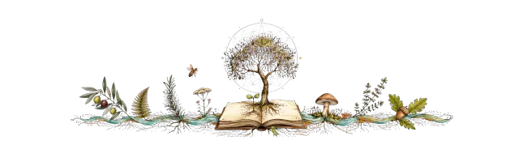
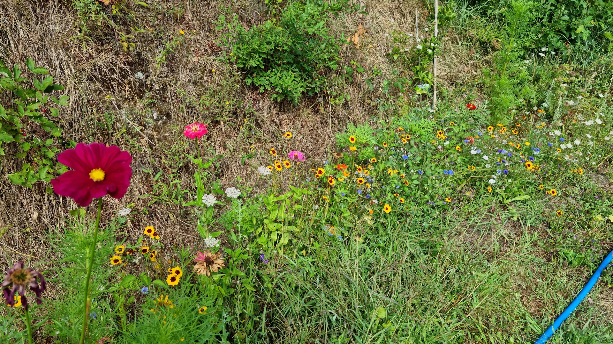
Let’s co-create something more alive
You do not need to have the whole vision figured out. Send me what you know and what you are dreaming of.
A map. Some photos. A voice note. A challenge. A possibility. We can begin there.
Central Portugal · Portugal-wide projects · Online consultation